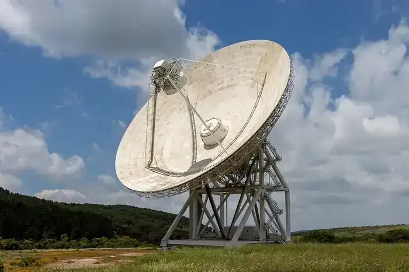
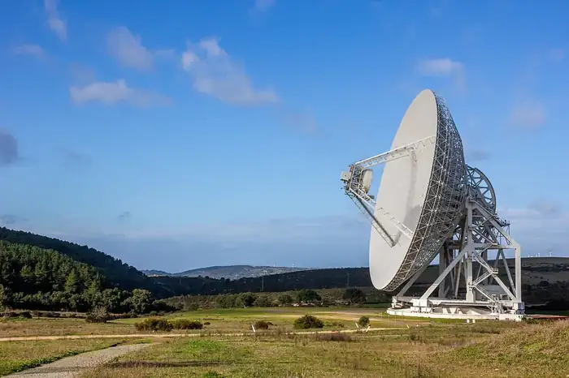

The theory and its conditions
Gordon Allport's The Nature of Prejudice (1954) argued that contact between groups reduces prejudice only under four conditions: equal status within the situation, common goals, intergroup cooperation, and support from authorities or custom.
Maps, diagrams and images





Without them, contact can reinforce stereotypes — a competitive, unequal encounter gives each side evidence for what it already believed. This is why the theory is not simply 'exposure fixes bias', which is how it is often summarised.
Pettigrew and Tropp's 2006 meta-analysis of 515 studies found a reliable negative relationship between contact and prejudice, and found that the effect appeared even in studies that did not meet all four conditions — but was stronger where they were met.
The methodological fights
Selection is the central problem. People who are less prejudiced may seek out contact, producing the correlation without the causal direction claimed. Longitudinal studies and natural experiments — desegregation orders, randomised roommate assignment, refugee placement — reduce but do not eliminate this.
Generalisation is the second. Does a good interaction with one member of a group change attitudes to the group? The evidence says yes, through friendship and through changed perceptions of group norms, but the effect sizes are modest and decay without reinforcement.
A 2005 critique by Dixon, Durrheim and Tredoux argued that the literature systematically studies harmonious contact and ignores the political conditions that make inequality durable — that contact research can end up prescribing better attitudes instead of structural change.
Contact works: the meta-analytic effect is robust across countries, age groups and target groups, and it is one of the better-replicated findings in the discipline.
Friendship is the mechanism: cross-group friendship is consistently the strongest predictor, more than casual exposure.
Conditions matter: cooperative, equal-status, institutionally supported contact outperforms unstructured mixing.
Scale is not settled: whether many small positive encounters add up to less structural discrimination is an open empirical and political question.
The archive labels this live debate because the psychological effect is well established while the policy inference from it is contested.
Why it is in the archive
Because it is a rare case where a social-psychological finding is both robust and genuinely difficult to apply, and the gap between the two is instructive.
Related: Dunbar’s number, echo chambers.
Sources for this page
- Wikipedia, “Contact hypothesis” — Allport’s conditions and the evidenceen.wikipedia.org
- Pettigrew & Tropp (2006), Journal of Personality and Social Psychology — the meta-analysisdoi.org
- Dixon, Durrheim & Tredoux (2005), “Beyond the optimal contact strategy”doi.org
- Wikipedia, “Intergroup contact theory” — the research programme since Allporten.wikipedia.org
Open resources on this topic
- BookInterracial public housing in Border City; a situational analysis of the contact hypothesis — Ford, W. Scott · 1972 (Internet Archive, free to read)
- BookThe Contact Hypothesis and Its Relevance to Busing — Bertha Dancil Henderson · 1973 (Internet Archive, free to read)
- BookInterracial Housing: A Reassessment of the Contact Hypothesis. — Cagle, Laurence T. · 1971 (Internet Archive, free to read)
- PapersOpen-access articles: DOAJ · PubMed Central · Internet Archive Scholar
- BooksPublic-domain and borrowable copies: Open Library · Project Gutenberg · Google Books
Cite this page
Momin, S. (2026). The Contact Hypothesis. The Larger World Archive. https://drsamonline.github.io/LARGE_GLOBE/contact-hypothesis.htmlMomin, Sohil. “The Contact Hypothesis.” The Larger World Archive, 2026, https://drsamonline.github.io/LARGE_GLOBE/contact-hypothesis.html.Momin, Sohil. “The Contact Hypothesis.” The Larger World Archive, 2026. https://drsamonline.github.io/LARGE_GLOBE/contact-hypothesis.html.@misc{the2026contact,
author = {Momin, Sohil},
title = {The Contact Hypothesis},
year = {2026},
howpublished = {The Larger World Archive},
url = {https://drsamonline.github.io/LARGE_GLOBE/contact-hypothesis.html},
note = {Last reviewed 20 November 2026}
}Last reviewed 20 November 2026 · Corrections policy · this page is not peer reviewed